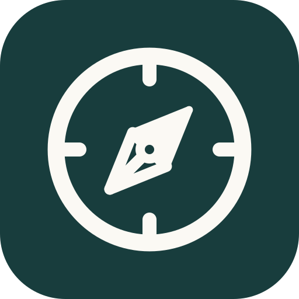

Inspirées directement des bibliothèques professionnelles les plus utilisées par les designers et développeurs (Bootstrap Icons, Lucide Icons, Feather, Apple SF Symbols). Palette officielle : Vert-Teal #183d3d et Crème #fbf9f4.
bi-mortarboard / graduation-caplucide/book-open / bi-book
192 × 192bi-compass / lucide/compassbi-journal-check